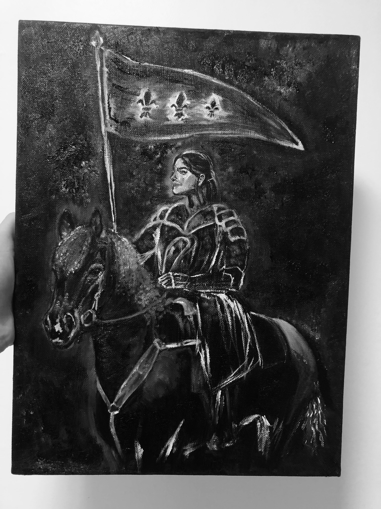
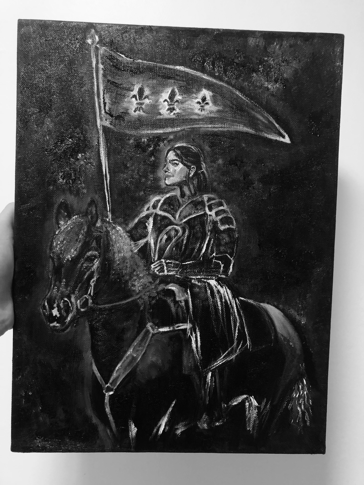

Intestines, Crystals and Joan of Arc
Learned new things in Blender (thanks Axel!) resulting in some intestines and a magic sci-fi crystal, and painted myself as Joan of Arc on Perflex (oil on canvas).

Learned new things in Blender (thanks Axel!) resulting in some intestines and a magic sci-fi crystal, and painted myself as Joan of Arc on Perflex (oil on canvas).
